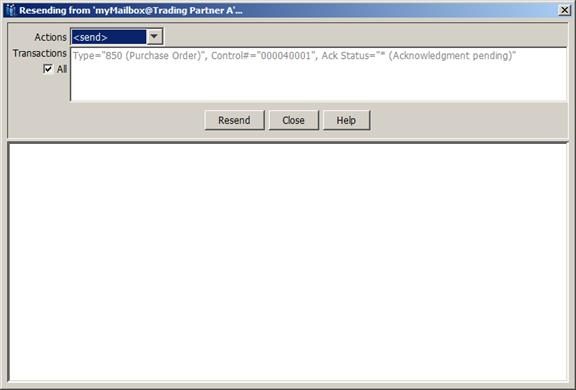

- Configure > Options > Transfers > Transfer Logging is set to Database.
- The sentbox or receivedbox is configured.
- Configure > Options > Other > Disable Date/Time Portion of Filenames in Sent/Received Box is unchecked (off).
- The send or receive applies to a remote host.
For one or more transfers, when Resend... or Rereceive… is selected, the following dialog will be displayed:

The Actions drop-down list provides the list of all actions within the mailbox. If all selected transfers belong to the same action, then that specific action will be pre-selected for you. If EDI file tracking is enabled, a list of Transactions is also displayed and a subset of transactions can be selected for resend or rereceive. After selecting the desired action and optionally transactions, click the Resend or Rereceive button to initiate the new transfer operation. The selected files will be located within the sentbox or receivedbox and run through the specified action. In the case of rereceive, an actual protocol transfer does not occur, but the file is re-streamed into the appropriate inbox directory and any execute/email on properties are invoked. The progress of the repeat operation is displayed within the dialog as shown below: